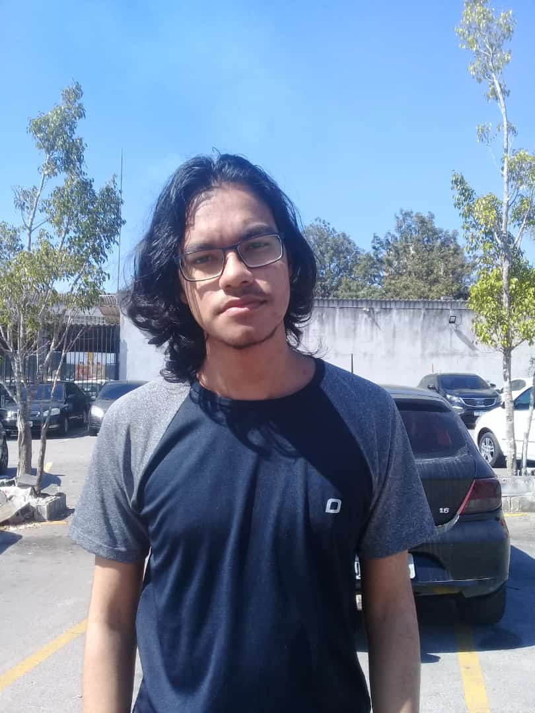
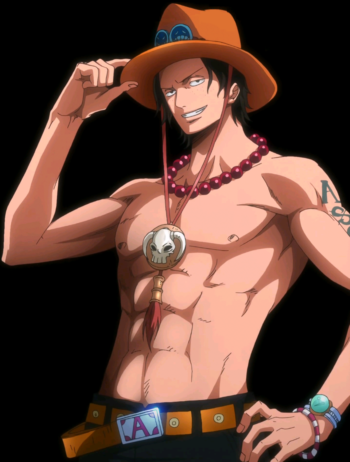
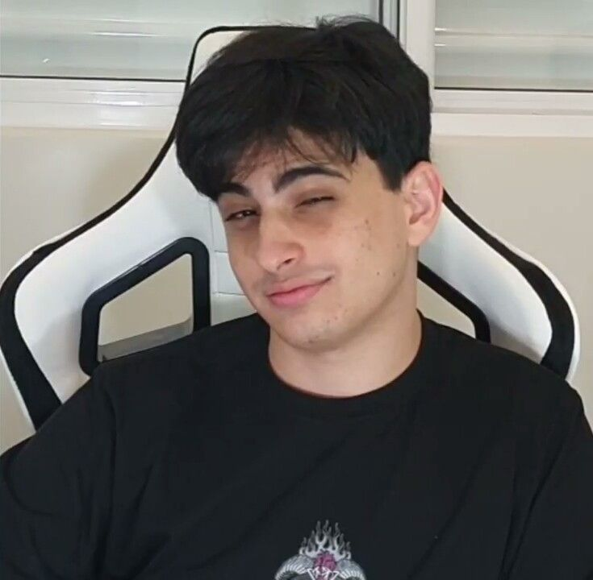

Sobre mim

Meu nome é Nathan Oliveira, eu tenho 18 anos, estou morando na Cidade Tiradentes(zona leste) e estudando no Ruy de Mello Junqueira, e o que eu mais faço é utilizar o computador, gosto muito de jogar mas não sou aquele "GAMER" que normalmente pensam, ja joguei pokemon fire red, sonic 1 - 3 & knuckles, mega man, etc.
Sou eclético em relação a músicas, mas de um tempo pra cá (ano passado) comecei a escutar muito rap de anime, que antes eu achava muito vergonha alheia, e hoje em dia eu continuo achando, mas eu escuto mesmo assim.
Amo ver anime, não vi tantos, mas gosto de ver para ter uma opinião, até porque eu amo criticar também, gosto mais do estilo shounen que é algo como one piece, naruto, boku no hero, kimetsu no yaiba, etc.
Não prático nenhum esporte, antes da pandemia o máximo que eu fazia era andar para escola, curso, casa de alguém, essas coisas padrões, mas to querendo treinar um pouco para ter um pouco de corpo, musculo, essas coisas, sou muito magro então me incomodo um pouco com essas coisas bestas,
eu fazia de vez em quando umas flexões na sala, só pra passa um pouco o tempo e da aquela treinada aleatória, mas parei porque não tenho supervisão de um profissional e não sei o que fazer a mais para melhorar isso (a culpa também foi da preguiça).
Sou muito sincero, e uma coisa que gosto de levar na minha vida, é um modo de viver de um personagem da obra "one piece", chamado "Ace", o modo é "viver sem arrependimentos", claro que eu não consigo fazer isso, então eu tento viver com o mínimo de arrependimento possível.

Comidas
Eu gosto de poucas comidas, a minha favorita é a Feijoada ( Receita), eu sou muito frescurento pra comer, tem dias que a comida tem carne, e eu não como porque não vou com a cara ou algo do tipo, mas o que eu mais como é arroz e feijão,
mas uma coisa que eu queria muito comer, é o Ratatouille do filme Ratatouille ( Receita).
Personalidades em que me inspiro
